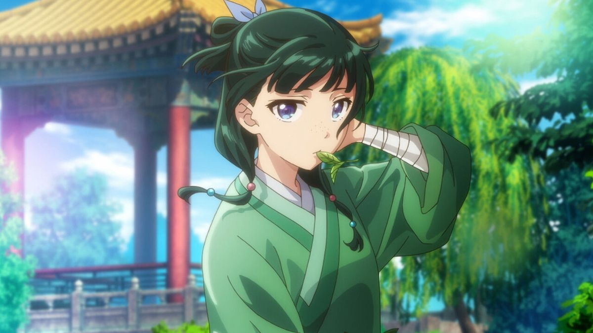

The Palace Scrolls
Click the buttons, or press the left and right arrow keys on your keyboard, to turn the scroll.

Maomao's Workshop, an interactive page from the rear palace
Click the buttons, or press the left and right arrow keys on your keyboard, to turn the scroll.

A bowl of soup has arrived for a consort. Someone has to taste it first.
The soup is waiting.